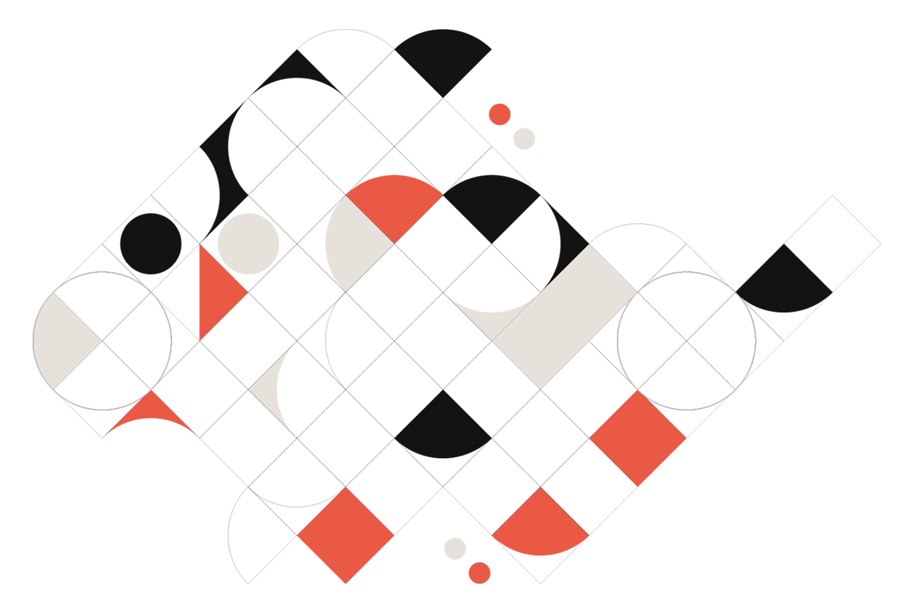
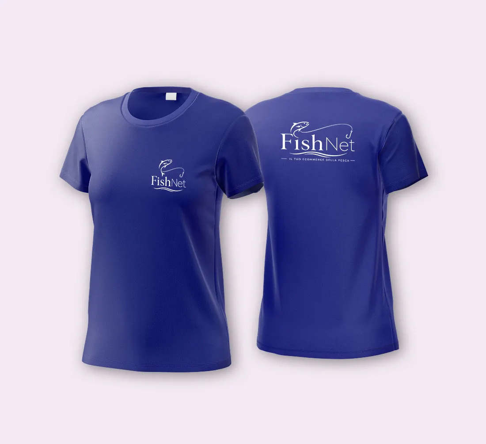
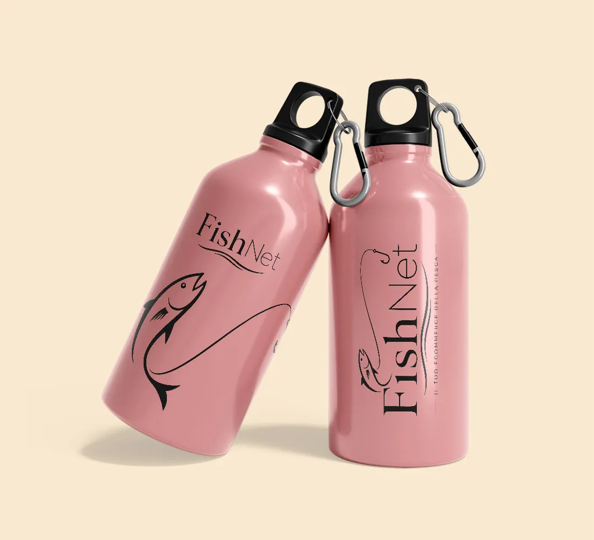
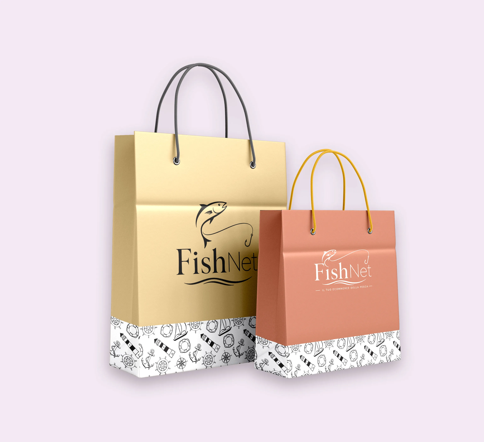
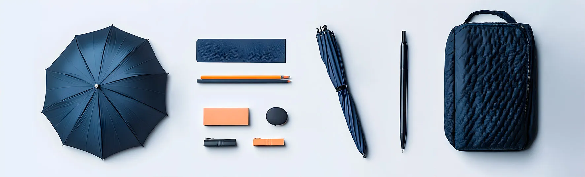

Gadget
Aziendali
Fornisco gadget personalizzati per aziende, eventi e attività commerciali, curando sia la scelta del prodotto che la preparazione della grafica.
Penne, tazze, shopper, agende, borracce, abbigliamento, accessori promozionali e articoli da evento possono diventare strumenti utili per rendere il brand più visibile e riconoscibile. Ti aiuto a trasformare un semplice oggetto in un materiale promozionale curato, coerente con la tua immagine e pronto per essere consegnato ai tuoi clienti.

Cosa ricevi
Il servizio può includere la ricerca del gadget più adatto, la personalizzazione grafica, la preparazione dei file di stampa e la gestione della fornitura, in base al tipo di prodotto, alla quantità richiesta e agli accordi definiti nel preventivo.
Posso seguire progetti semplici, come la personalizzazione di penne, tazze o shopper, oppure forniture più complete per fiere, eventi, attività promozionali, kit aziendali e materiali coordinati. Ogni proposta viene valutata in base all'utilizzo finale, al budget e all'immagine che vuoi comunicare.
L'obiettivo è consegnarti gadget personalizzati realmente utilizzabili, ordinati nella grafica e adatti al contesto in cui verranno distribuiti, evitando prodotti scelti a caso o personalizzazioni poco curate.
Gadget personalizzati per la tua attività
Un gadget funziona quando è utile, coerente e ben realizzato. Per questo non mi limito ad applicare un logo, ma valuto il tipo di prodotto, l'area di stampa, i colori, la leggibilità e la resa finale.
Che si tratti di materiale promozionale per clienti, articoli per eventi, omaggi aziendali o prodotti coordinati con la tua identità visiva, posso aiutarti a costruire una proposta completa: dalla grafica alla stampa, fino alla consegna del prodotto personalizzato.

T-shirt personalizzate
Borracce personalizzate
Shopper personalizzate
Kit evento personalizzatoVuoi vedere il portfolio completo?
Nel portfolio trovi una selezione più ampia di lavori legati a logo design, brand identity, grafica pubblicitaria, impaginazione, stampa e comunicazione visiva.
© Luca Cantale. Tutti i progetti presenti nel portfolio sono mostrati a scopo dimostrativo. È vietata la riproduzione, la modifica o l’utilizzo senza autorizzazione.